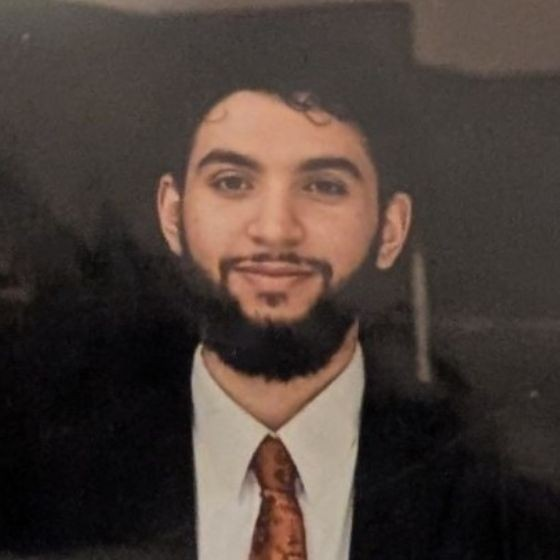

السلام عليكم — welcome
Osama Hafez
It's not just about what you can do at your work desk, but what you do away from it.

By day I’m a community organizer running WhatsApp-based fundraising for families in need. By night I write code to make that work — and the wider Muslim student ecosystem — run a little smoother. I care about tools that are simple, cheap to run, and actually get used.
Experience
-
Full Stack Software Developer Jan 2023 – Present FluidAI (formerly NERv Technology) · Contract · Hybrid
- Architecting a multi-tier EHR integration platform enabling secure connectivity, fast patient onboarding, and asynchronous clinical data collection.
- Identified efficient pathways for third-party integrations to external health systems, reducing overall request time by at least ~45–60 seconds per request.
- Built and modified modular APIs to support multiple web and mobile applications, improving scalability and developer reusability.
- Automated demo data creation and upload pipelines for commercial use cases, increasing flexibility and reducing manual prep time.
- Led agile adoption across projects, streamlining workflows to align deliverables with business timelines and improve onboarding and collaboration.
- Designed and implemented authentication protocols for ASP.NET backends, enhancing system security and front-end integration.
- Migrated core services from C# to Python and TypeScript, optimizing NoSQL data handling and modularizing codebase usage.
- Worked closely in an apprenticeship-style capacity to define and refine product requirements, bridging technical feasibility with commercial goals.
-
Teaching Assistant 2021 – 2023 University of Toronto · Programming on the Web (CSC309) · Mississauga, ON
Across three teaching terms:
- Jan – May 2021
- Dec 2021 – Apr 2022
- Jan 2023
- Teaching Assistant for Programming On The Web (CSC309), a third-year software development course.
- Led tutorial sessions, conveying a range of web development concepts to support students’ understanding.
- Conducted student interviews to evaluate course projects and provide constructive feedback.
- Implemented automated marking scripts to streamline grading, improving efficiency and accuracy.
-
Software Engineer Intern May – Aug 2022
D2L · Co-op
-
Full Stack Developer Intern May 2021 – Apr 2022 Cognitive Systems Corp. · Waterloo, ON
- Orchestrated the implementation of a dynamic authentication system for a Network Operations Center, tailored to evolving customer requirements, through the integration of Single Sign-On using the OpenID Connect protocol, resulting in an enhanced and user-friendly security experience.
- Pioneered the creation of a self-hosted documentation user interface using OpenAPI and Redoc, promoting transparency across the organization.
- Streamlined the documentation process by automating key aspects with Python and Docker, optimizing the generation of API documentation user interfaces.
- Spearheaded the development of scaffolding for a robust UX test framework utilizing Jest and Puppeteer, ensuring a dependable and consistent user experience.
- Customized a web-based API editor in Node.js and Angular, facilitating real-time document updates and enhancing collaboration.
-
Cofounder Nov 2019 – Oct 2021 Muslim Athletic Association · Self-employed · Mississauga, ON
- Demonstrated strong leadership by assuming central responsibilities to ensure team stability.
- Spearheaded the development of an MVP customer relationship management application for an athletic organization catering to 300+ athletes, using Node.js and Bootstrap.
- Enhanced operational efficiency by implementing Python scripts for automating weekly updates.
- Streamlined program registration to reduce business overhead, tailored to company requirements.
- Designed relational schemas, meticulously organizing a database of over 400 customers using PostgreSQL.
- Managed and coordinated four soccer leagues and a running club over a two-year period.
- Provided referee services for soccer games.
- Led the drafting of essential forms and supervised multiple registration processes.
- Leveraged word-of-mouth marketing as a highly effective promotional strategy.
- Collaborated extensively with various community-driven organizations, fostering valuable partnerships.
Things I’m building
-
MSLA — Muslim Student Leaders & Alumni
FounderAn organization I founded to strengthen Muslim Students’ Associations across Canada — building leadership pipelines, alumni networks, advocacy data, and long-term financial backing.
-
Sadaqa Tracker
Next.js · PostgresA case tracker for community fundraising — managing $1–3k hardship cases from intake to fulfillment, built for volunteers who live in WhatsApp.
-
MSA Data Tool
Data · SchedulingPart of MSLA’s advocacy work — turning MSA Instagram posts into structured event data, plus a lightweight group-scheduling tool.
-
Zakat
FinanceA helper for calculating and tracking zakat.
-
Shafi’i Books
KnowledgeA digital reference library for Shafi’i fiqh texts.
-
Task Management
ProductivityA lightweight tool for organizing work and volunteers.
Volunteering
-
Financial & External Relations Exec, Charity Director 2018 – 2023
UTM Muslim Students’ Association
Five years across finance, external relations, advocacy, and charity leadership.
-
Boys Youth Group Volunteer 2013 – 2015
Muslim Association of Canada
Education
-
BASc, Computer Science 2017 – 2023
University of Toronto
Built by hand · hosted on GitHub Pages